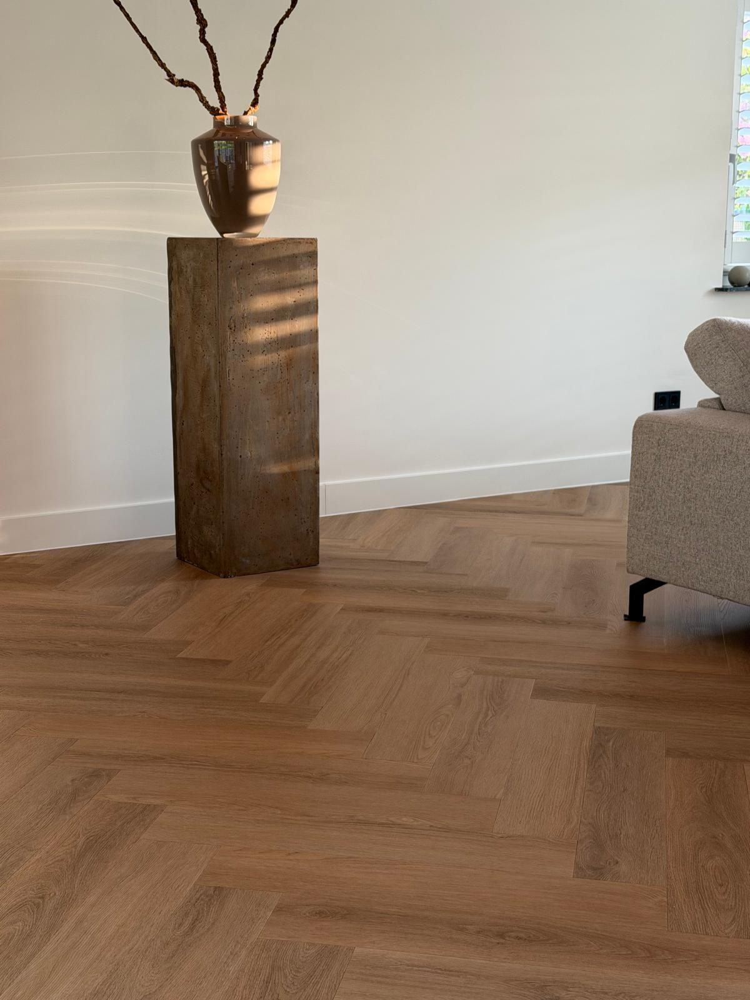
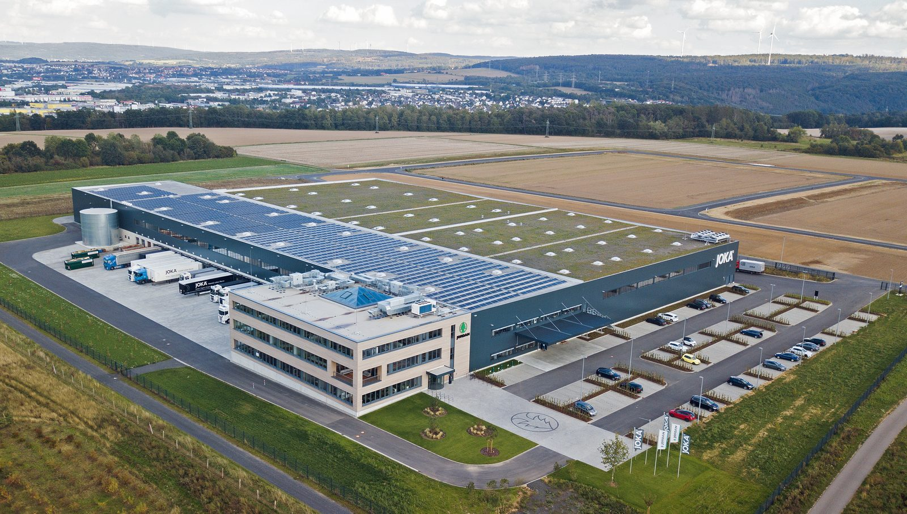
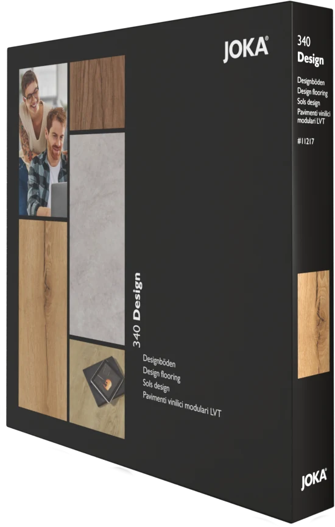
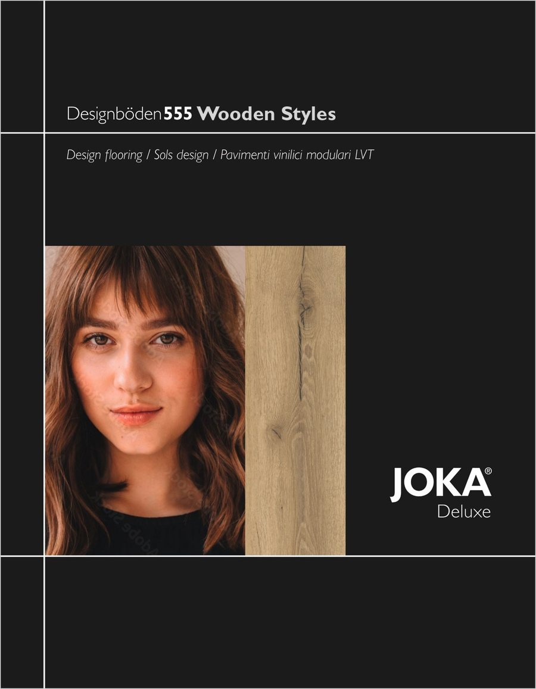
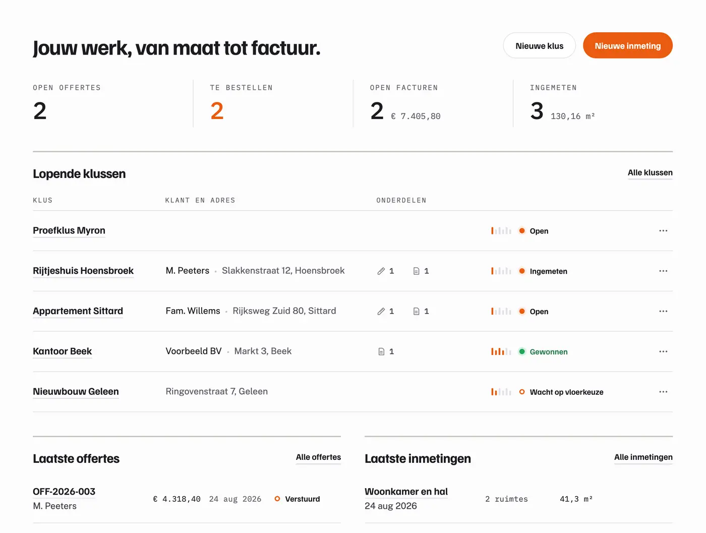
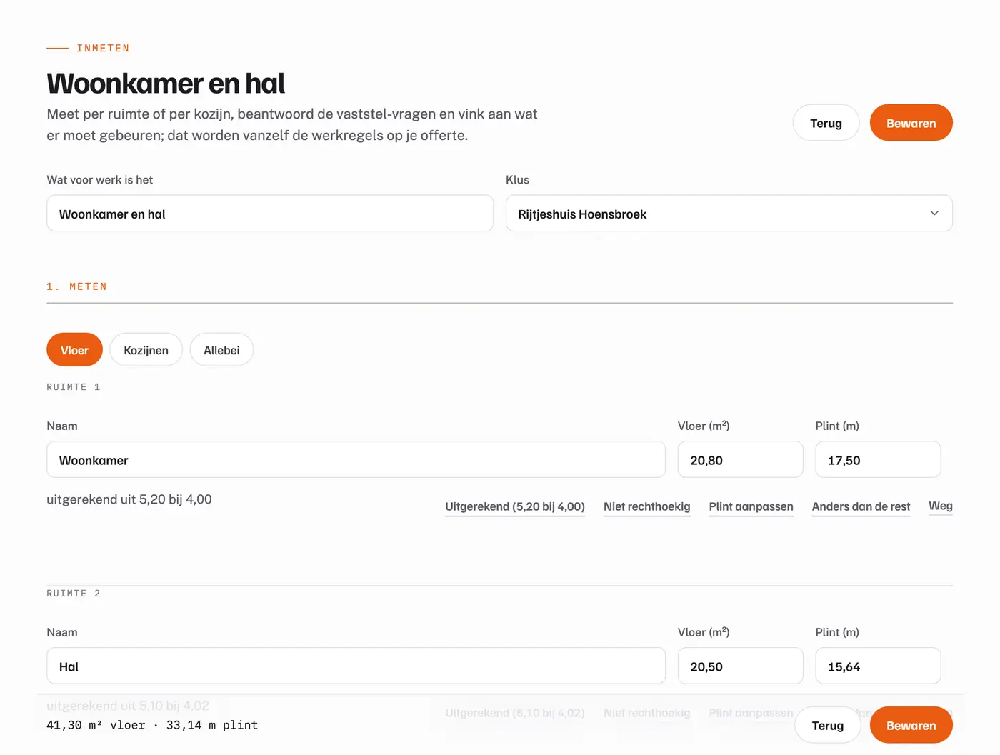
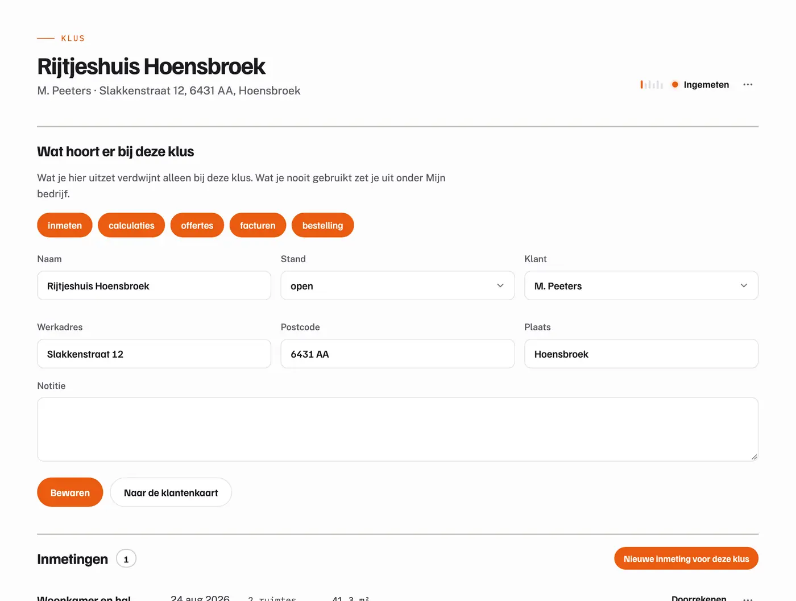
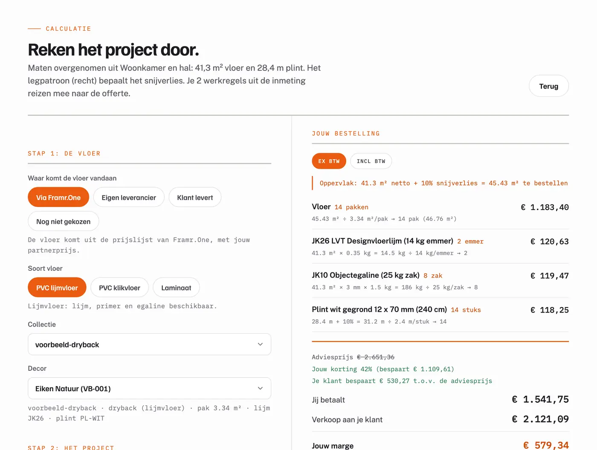
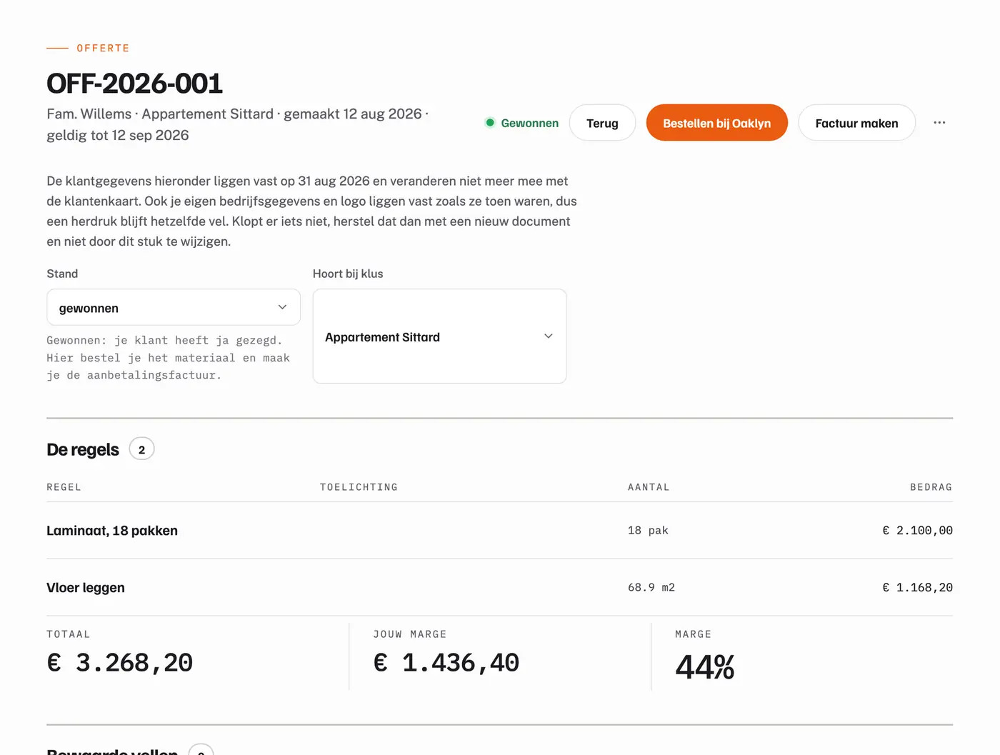
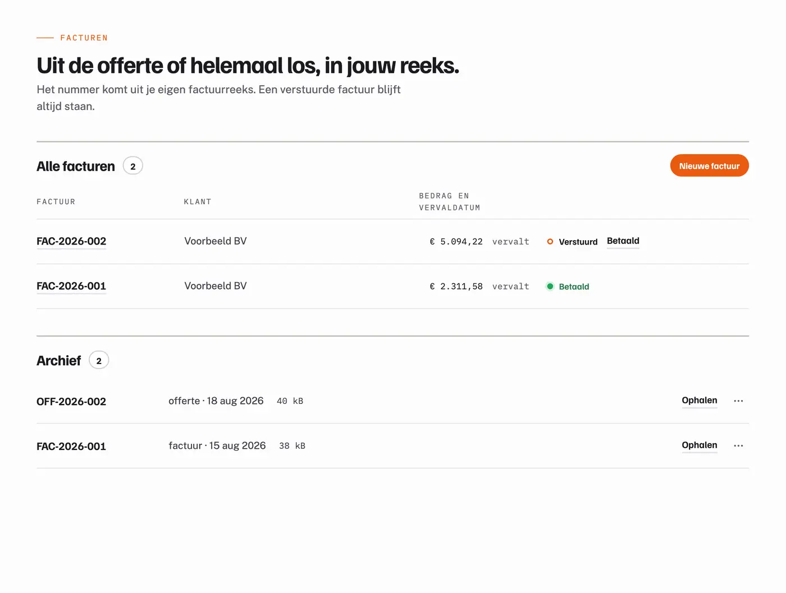

€ 5,04marge per m2 op Airy Oak Jouw margeVerdien aan de vloer zelf.Partnerprijs in, jouw prijs uit. Het verschil is van jou, bovenop je legwerk.
Zo verdien je →
Het magazijnUit voorraad, in 2 tot 4 werkdagen.Rechtstreeks uit het magazijn van JOKA in Kassel, op het adres dat jij kiest.
Waar je vloer vandaan komt →

De stalenboekenDe klant kiest op de vloer zelf.Per collectie een box met alle stalen. Open hem bij de klant op de grond; de keuze is gemaakt voor je weg bent.
Zo verkoop je het →
Het portaal, gratisVan inmeten naar factuur.Inmeten bij de klant, doorrekenen met jouw marge, offerte en factuur uit dezelfde klus.
Bekijk het portaal →01 Je marge
Zo verdien je ook aan je materialen.
Je koopt tegen partnerprijzen, bepaalt zelf je verkoopprijzen en houdt het verschil over als brutomarge. Dat geldt voor de vloer en voor alles wat je erbij levert: lijm, egaline, ondervloer, plinten.
Inkopen tegen partnerprijs
inkoop op brons, per m2 Airy OakDezelfde JOKA-vloer als in de winkel, met jouw partnerprijs erachter.
Verkopen tegen jouw prijs
in dit voorbeeld 15% onder de adviesprijs vanJij bepaalt wat de klant betaalt.
Het verschil is jouw marge
brutomarge op materiaal, per m2Bovenop je legwerk; daar pakken wij geen percentage van.
Woonkamer en hal, 41,3 m2, alles erbij: verkoop −inkoop = brutomarge
Reken je klus door
Wat verdien je aan je volgende klus?
Erbij
Bij klussen per maand:
Verkoop min inkoop op brons
Naast je legwerk, exclusief btw. Snijverlies, hele verpakkingen en de plint zijn meegerekend.
Zo maak je deze klus in het portaal →Drie voorbeelden
Drie klussen, doorgerekend.
Dezelfde prijzen en dezelfde regels als de calculator. Druk op een klus en hij staat erin.
02 Je vloer
Uit het magazijn van JOKA, in 2 tot 4 werkdagen.
JOKA is het merk van de vloer. Oaklyn is onze eigen winkel, waar de particulier tegen winkelprijs koopt en jij als vakbedrijf tegen je partnerprijs. Je bestelt in het portaal, de bestelling komt bij Oaklyn terecht en wij regelen de rest met JOKA.
Het magazijn
Drie hallen, het hele assortiment op voorraad.
De vloer komt uit het magazijn van JOKA in Kassel: van de vloer zelf tot de plint, de ondervloer en de lijm. Staat een vloer niet op voorraad, dan hoor je dat vooraf.
- 2 tot 4 werkdagenvoor vloeren en hulpstoffen uit voorraad, na je bestelling
- Op het adres dat jij kiestde klus, het adres van je klant of je eigen loods
- Bevestigd in het portaalmet de leverdatum erbij, zodat je de klus kunt inplannen
De materiaallijst uit je calculatie, tegen de prijs die je daar al zag.
Onze eigen winkel, waar je partneraccount en je niveau lopen.
Uit het magazijn in Kassel, met de plint, de ondervloer en de lijm erbij.
De klus, je klant of je eigen loods. Bevestigd in het portaal, met de leverdatum.
De collectie
555 Wooden Styles. Acht eiken, plank of visgraat.
De lijn van de calculator en van de klusfoto: een toplaag van 0,55 mm, planken van 1524 bij 228 mm of visgraat van 762 bij 152, te plakken of te klikken. Kies een eik en zie hem in de kamer.
Het assortiment en je prijs
De vloer en alles wat je nodig hebt, tegen jouw prijs.
Met je partneraccount krijg je automatisch een account bij Oaklyn. Daar kijk je altijd rond: alle vloeren, hulpstoffen, plinten en gereedschap, tegen jouw prijs. Bij de start op brons; wie regelmatig bestelt gaat naar zilver, wie zijn materiaal structureel via ons haalt naar goud.
JOKA LVT 340 Dryback, Airy Oak
Pvc plak, 3,37 m2 per pak. Brons per m2, advies .
JOKA NL30 S dispersielijm
Voor pvc en LVT, 14 kg. Het verbruik rekent de calculator uit de oppervlakte.
JOKA JK10 egalisatie cement
25 kg. Laagdikte en verbruik uit de ondergrond die je bij het inmeten vastlegt.
JOKA MDF plint 12 x 70, wit
Lengtes van 2,4 m. Het aantal komt uit de omtrek min de deuropeningen.
Voor iedere partner, vanaf de eerste klus. De prijzen op deze pagina.
Voor wie regelmatig bestelt. Scherper op de vloer en op de hulpstoffen.
Voor wie zijn materiaal structureel via ons haalt. De scherpste inkoop die we hebben.
Rechtstreeks bij de bron, zonder plaatselijke groothandel ertussen. Wat jij je klant rekent blijft jouw zaak; wij zien het niet en bepalen het niet.
03 Verkopen
De klant kiest op de vloer zelf, niet op een scherm.
Met de stalenboeken van JOKA, de brochure en de showrooms verkoop je de vloer bij de klant aan tafel. Daarna bestel jij in het portaal, tegen je partnerprijs.
De stalenboeken
Per collectie een box met alle stalen.
Je koopt ze bij Oaklyn, onze eigen winkel, per lijn die je voert; bestel ze mee met je eerste bestelling. Je klapt ze bij de klant open op de grond, naast de plint en het kozijn, en de keuze is gemaakt voordat je de deur uit bent.
- Design 340plak en klik, het stalenboek van 2027
- 555 Wooden Stylesde plank en de visgraat, de lijn van de calculator
De brochure
Tachtig pagina's om mee te nemen.
De JOKA Designvloeren 2025: alle collecties, de kamerbeelden en de technische gegevens. Blader hem hier door; bij de klant laat je hem zien op je telefoon, en de papieren versie zit in de box van het stalenboek.
De showrooms
Wil je klant het in het echt zien? Stuur hem naar JOKA.
Daar ligt de hele collectie, met de plinten en de trappen erbij. Je klant kiest, jij bestelt in het portaal tegen je partnerprijs.
6031 TT Nederweert Route en tijden → Eindhoven Dillenburgstraat 17
5652 AM Eindhoven Route en tijden → Rotterdam Dotterbloemstraat 40
3053 JV Rotterdam Route en tijden → Hengelo Platinastraat 110
7554 NB Hengelo Route en tijden → Heerhugowaard Galileistraat 13
1704 SE Heerhugowaard Route en tijden →
04 Het portaal
Van inmeten naar factuur, in een paar klikken.
Tot hier ging het over wat je verdient. Dit is hoe je het regelt. Bij je partneraccount hoort het portaal: je meet in bij de klant, rekent door met jouw marge, en offerte, bestelling en factuur komen uit dezelfde klus. Het kost niets, nu niet en later niet.
Wat je krijgt
Vijf pakketten, allemaal inbegrepen.
Een klus loopt van links naar rechts door het portaal. Elk pakket is een tabblad; wat je bij een klus niet gebruikt zet je uit. Dit zijn de echte schermen, met verzonnen gegevens.

01 InmeetpakketInmeten bij de klantRuimte voor ruimte, de meters vloer en plint. Uitrekenen uit lengte en breedte zit achter een knop.

02 ProjectpakketEen dossier per klusKlant, werkadres, inmeting, calculatie, offerte en facturen bij elkaar.

03 CalculatiepakketDoorrekenen met jouw margeSnijverlies, pakken, lijm, egaline en plint rekenen zichzelf. Rechts wat jij betaalt en wat je overhoudt.

04 OffertepakketOp jouw naam, in jouw reeksHet vel staat naast het formulier en verandert mee. Als PDF de deur uit; zegt de klant ja, dan wordt het de klus.

05 FactuurpakketUit de offerte, met een knopAanbetaling vooraf en de rest na oplevering, btw per regel, en het archief van elk vel dat de deur uitging.
Probeer het zelf
Meet een ruimte in, hier op deze pagina.
Stap 1 en 2 in het klein, met dezelfde rekenregels als het portaal. Vul de maten in, kies het legpatroon en de vloer, en de materiaallijst staat er.
In het portaal doe je dit per ruimte, met foto's, ondergrond, dorpels en hulpstoffen erbij, en gaat de lijst als bestelling door. Bronsprijs, alleen de vloer, exclusief btw.
Materiaallijst
Onder de motorkap
Gebouwd op hoe jij werkt.
Geen kantoorsoftware die toevallig ook vloeren kan. De uitzonderingen van een echte klus zitten erin, zonder dat ze in de weg staan als je ze niet nodig hebt.
- Meer vloeren in een klus. Laminaat op zolder en pvc beneden: elke vloer zijn eigen soort, patroon, snijverlies en toebehoren.
- Niet rechthoekig, of anders dan de rest. Vlakken erbij, een trapgat eraf, of je vult het netto oppervlak in dat je zelf al weet. Een ruimte die afwijkt vul je apart in.
- Eigen leverancier, of de klant levert. Per vloer kies je waar het materiaal vandaan komt. Werk en voorbereiding worden altijd meegerekend.
- Btw per regel, jouw nummerreeks, jouw logo. 21 procent, 9 procent of verlegd; offertes en facturen tellen door waar je oude systeem ophield, als PDF met je eigen logo.
- Het restant in beeld. Aanbetaling vooraf, de rest na oplevering; wat open staat blijft staan tot het betaald is.
- Op je telefoon, alleen jouw gegevens. Het portaal draait in de browser, bij de klant en op kantoor, en geeft uitsluitend jouw eigen klussen terug.
Waarom het niets kost
De software is inbegrepen. Jij houdt de keuze.
Elders 45 tot 60 euro per maand
Vergelijkbare pakketten beginnen na een proefperiode met een abonnement, en meer gebruikers of onderdelen kosten meer. Bij ons niet: de vijf pakketten hierboven, allemaal inbegrepen, ook na een maand en ook na een jaar. Er is geen betaalde versie en geen module die je later moet bijkopen.
Zo verdienen wij
Framr.One is ook je groothandel. Wij verdienen op het materiaal dat via ons de deur uitgaat, niet aan een maandbedrag en niet aan een percentage van jouw werk. Twee verdienmodellen naast elkaar, en ze zitten elkaar niet in de weg.
Nooit verplicht om via ons te bestellen
De klant heeft de vloer al gekocht, wil een ander merk, of je werkt uit eigen voorraad. Je voert merk, pakinhoud, prijs en snijverlies zelf in, en meten, calculeren en offreren werken gewoon door. Wij verdienen die keer niets, en dat is onze zorg.
Prijzen van vergelijkbare pakketten, nagekeken in september 2026.
Service en direct contact
Een aanspreekpunt, geen wachtrij.
Loopt er iets vast met een bestelling, een levering of het portaal, dan bel of app je ons en regelen wij het met JOKA. Geen ticket, geen keuzemenu, geen wachtrij. Je spreekt met iemand die je klus kent.
Een vast nummer, een vast aanspreekpunt. Je hoeft niets uit te leggen aan een formulier.
Een tekort, een beschadigd pak, een verkeerde plint: jij belt ons, wij bellen JOKA. Jij gaat door met leggen.
Wil je eerst zien hoe het werkt, dan lopen we een klus van jou samen door, in het echte portaal.
Extra klussen
Klussen uit je regio, als je wilt.
Particulieren die bij Oaklyn een vloer kopen, kunnen hem laten leggen. Wil je daaraan meedoen, dan zetten we je als legger bij de legservice op de Oaklyn-site, en komen die klussen uit jouw regio bij jou terecht. Gratis, zonder verplichting.
De legservice is net gestart, dus reken er nog niet op als vaste stroom. Zie het als extra werk dat erbij komt naarmate de winkel groeit. Zeg het bij je aanmelding of daarna.
Beginnen
Begin met je volgende vloerklus.
Je vult je bedrijfsgegevens een keer in. Daarna staan de vijf pakketten open en heb je je bronsprijzen. Geen abonnement, geen proefperiode, geen inkoopverplichting.
Hoe meld ik me aan?
Met Portaal proberen maak je een account: bedrijfsnaam, KvK, btw-nummer, adres, e-mail en een wachtwoord. Je rolt meteen het portaal in, en je bent meteen bronsklant bij Oaklyn.
Wat kost het?
Niets. Geen abonnement, geen betaalde versie, geen module die je later moet bijkopen. Wij verdienen als jij je materiaal via ons bestelt, en dat hoeft niet.
Welke prijzen zie ik?
Bij de start je bronsprijzen, dezelfde als op deze pagina. Wie regelmatig bestelt gaat naar zilver, wie zijn materiaal structureel via ons haalt naar goud. De adviesprijs staat er altijd naast, zodat je ziet wat de klant in de winkel zou betalen.
Hoe zit het met levering?
Vloeren en hulpstoffen uit voorraad leveren we in 2 tot 4 werkdagen, op het adres dat jij kiest. Je bestelling gaat naar Oaklyn en wordt bevestigd met de leverdatum erbij; staat een vloer niet op voorraad, dan hoor je dat vooraf. Zie het magazijn.
Past dit bij mijn bestaande administratie?
Je houdt je eigen nummerreeks voor offertes en facturen, je eigen briefpapier, je eigen betaalvoorwaarden en je eigen uurtarief en marge; een keer ingesteld, daarna rekent alles ermee. Je boekhoudprogramma verandert niet. Een koppeling daarmee komt later; tot die tijd exporteer je facturen als PDF.
Moet ik bij jullie bestellen?
Nee. Werkt met iedere vloer en iedere leverancier. Bestel je ergens anders, dan blijven calculatie, offerte, klus en factuur gewoon werken.
Werkt het op mijn telefoon?
Ja. Het portaal draait in de browser, dus op je telefoon bij de klant en op je laptop op kantoor; er is niets te installeren. Elk scherm heeft een eigen adres en de terugknop van je browser werkt gewoon.
Wie ziet mijn gegevens?
Jij. Het portaal geeft uitsluitend jouw eigen klussen, klanten en documenten terug; een andere partner ziet niets van jou.
Wat komt er nog?
Waar we aan werken, en dus nog niet beloven: een boekhoudkoppeling en hulp bij het verkoopgesprek (vloer kiezen met de klant, een klantlink). En kozijnen, in hetzelfde platform, met dezelfde werkwijze.
Voor vloerenleggers en vloerenbedrijven in Nederland